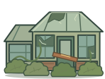
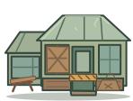
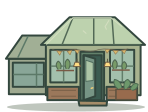

<!doctype html>
<html lang="en">
<meta charset="utf-8">
<meta name="viewport" content="width=device-width,initial-scale=1">
<title>Glasshouse facade states · Idle Hands 2 design</title>
<style>
 :root { font-family:Georgia,serif; background:#d3cbb8; color:#354637; }
 * { box-sizing:border-box; }
 main { max-width:830px; margin:16px auto; padding:clamp(10px,3vw,24px); background:#f7edd8; border:2px solid #354637; border-radius:8px; }
 h1,p { margin:0; }
 h1 { font-size:1.65rem; }
 header p { font-size:.87rem; margin:.3rem 0 1rem; }
 .facades { display:grid; grid-template-columns:repeat(3,minmax(0,1fr)); gap:.65rem; }
 figure { margin:0; min-width:0; text-align:center; }
 figure div { min-height:124px; display:grid; place-items:end center; background:#b4c19f; border:1px solid #7e8c71; border-radius:4px; }
 figure img { display:block; width:min(148px,100%); height:auto; }
 figcaption { font-weight:bold; padding:.5rem 0; }
 @media(max-width:500px) { main { margin:8px; } .facades { grid-template-columns:1fr; } }
 @media(max-height:480px) and (min-width:600px) { main { margin:0 auto; } }
</style>
<main>
 <header><h1>Inkwood Glasshouse</h1><p>Design preview · Facades at the game’s original scale</p></header>
 <div class="facades">
  <figure><div></div><figcaption>Overgrown</figcaption></figure>
  <figure><div></div><figcaption>Under repair</figcaption></figure>
  <figure><div></div><figcaption>Open</figcaption></figure>
 </div>
</main>
</html>
